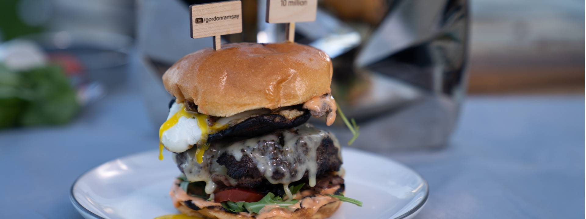

Cheeseburger Recipe

Description
A cheeseburger is a hamburger topped with cheese. Traditionally, the slice of cheese is placed on top of the meat patty.
The cheese is usually added to the cooking hamburger patty shortly before serving, which allows the cheese to melt.
Cheeseburgers can include variations in structure, ingredients and composition.
The cheeseburger recipe we'll be using is Gordon Ramsay's own recipe. One that he came up with to celebrate his 10 millionth Youtube subscriber.
Ingredients
The Burger
- 1 lb 85/15 ground beef (chuck and brisket)
- 2 oz frozen unsalted butter
- 1 tbsp granulated garlic or garlic powder
- 1.5 tbsp Maldon salt
- 1 tbsp fresh cracked black pepper
- 1 tbsp olive oil
- 2 slices swiss cheese
Toppings
- 2 large portabella mushroom caps, with stem and gills taken off
- 2 large eggs
- 1 tbsp olive oil
- 4 slices thick cut applewood smoked bacon
- 1 cup baby rocket
- 1 plum tomato, cut
- Maldon salt and cracked black pepper
The Buns
- 2 brioche burger buns
- Butter for toasting
Sriracha Mayo
- 1/4 cup mayonnaise
- 2 tbsp sriracha sauce
- Pinch of salt
Steps
- Pre-heat a gas or charcoal grill to medium heat on half and low on the other half.
-
In a medium size mixing bowl, place the ground beef. Using a box grater, grate the frozen butter and add to the beef.
Try to distribute the butter evenly while mixing together.
-
Form the beef mixture into two patties, about 4 inches wide and one inch thick so when the beef is fully cooked it will shrink to the size of the bun.
Lay the patties on a sheet tray or plate and chill for at least ten minutes. Season all sides of the patties generously.
- In a small mixing bowl, stir together the mayo, Sriracha sauce and salt together. Set aside.
-
Oil the meat well on both sides and place onto the medium heat side of the grill.
Cook to get nice grill marks for about two minutes, then rotate the patties 90 degrees to cross hatch and cook again for about two minutes.
- At the same time, add the bacon slices and mushroom caps (cap side up) to the medium heated side of the grill.
-
Flip the bacon and mushrooms over after three minutes and crack a raw egg into the mushrooms so they act as a cup to hold the egg in.
Season the egg well with salt and pepper.
-
Flip the beef patties and repeat the same cooking steps for the second side (about 4 minutes total).
Move the patties to the low heat side of the grill once the meat is about medium rare inside
(Note: if you like your meat cooked through more then cover the grill for a few minutes before you add your cheese).
- If the bacon seems fully cooked remove it from the grill. If it needs a few minutes still, move it to the low heated side.
-
Lightly butter the brioche buns and add to the low heated grill side.
Cover the meat with Swiss Cheese and close the lid on the grill for 1-2 minutes, checking the buns so that they do not burn.
- Remove the cooked bacon and brioche buns first. Place the bacon on a cutting board and rough chop.
-
Place the buns on the cutting board with the inside sides faced up. Smear about one tablespoon full of sriracha mayo over the grilled sides of the buns.
On each bottom bun, layer about ¼ - ½ cup of arugula and two seasoned tomato slices. Add a generous amount of the chopped bacon equally on top of the tomatoes.
Next, place the finished cheese burger onto the bacon. The egg inside the mushroom cap should have the whites cooked but the yolk still runny
(Again, if you prefer your egg cooked more just keep the cover on the grill longer to steam the top of the egg more).
- Put the egg/mushroom caps on top of the cheese burgers and cover with the mayo smeared top bun.
- Use a bamboo skewer to hold the burger together. Eat and enjoy!